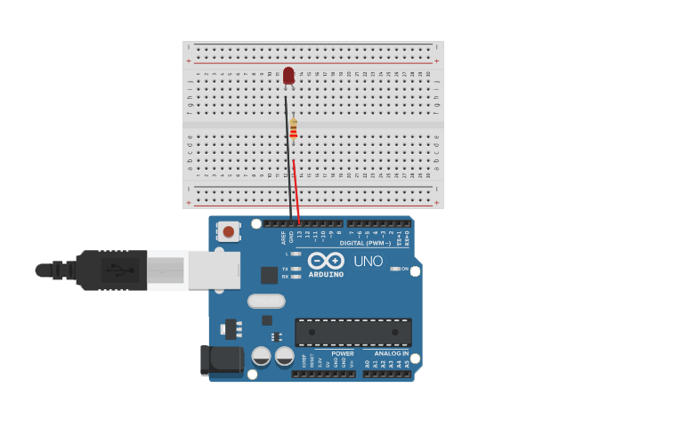
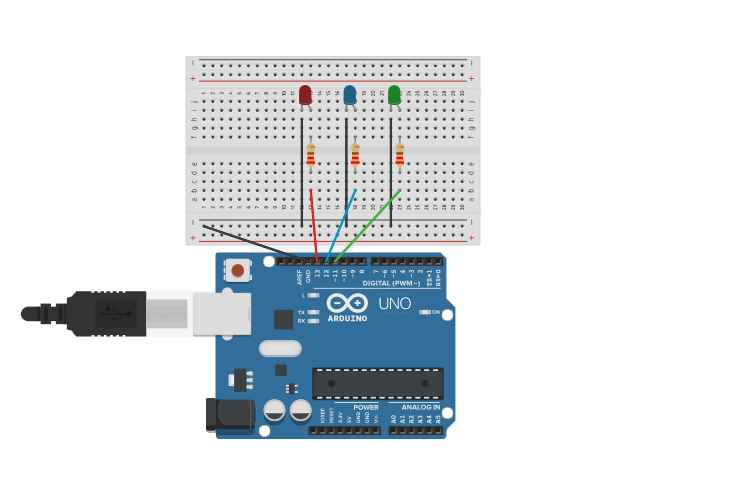
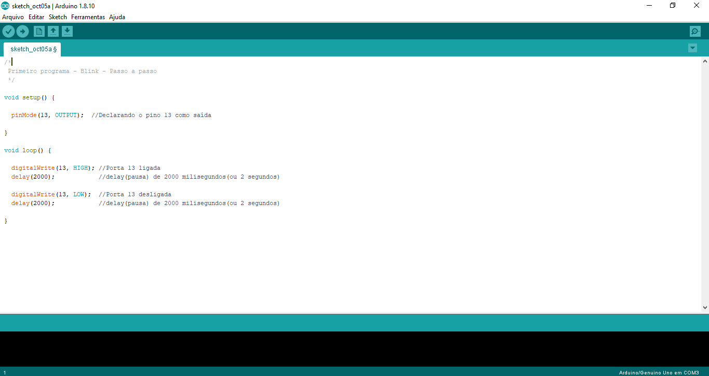
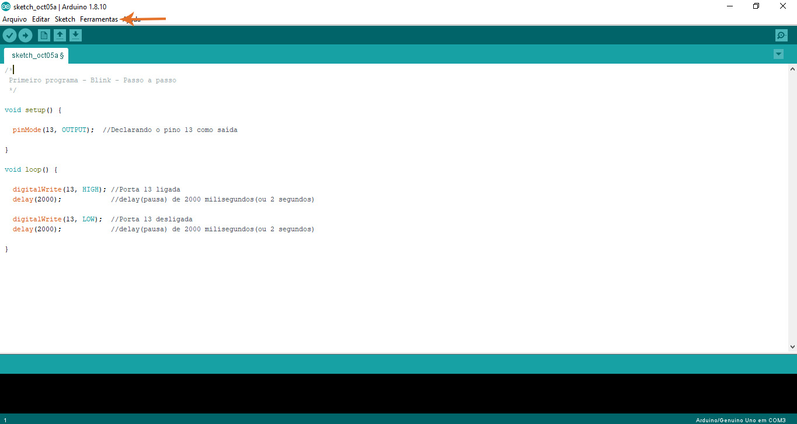
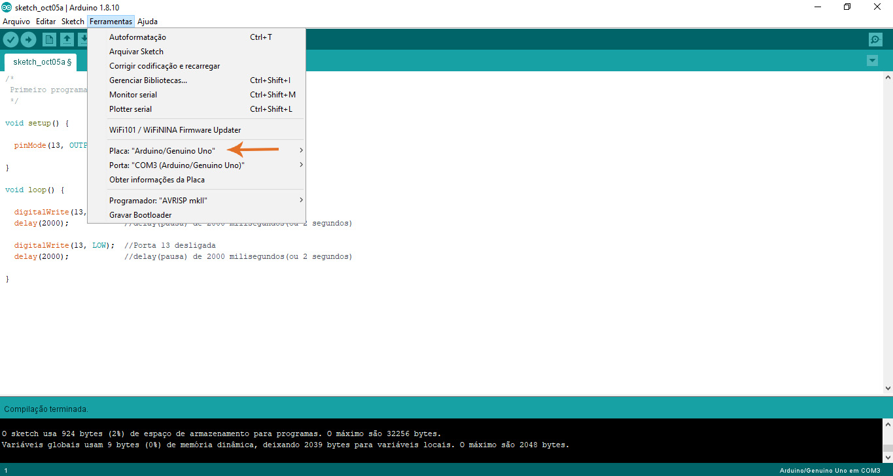
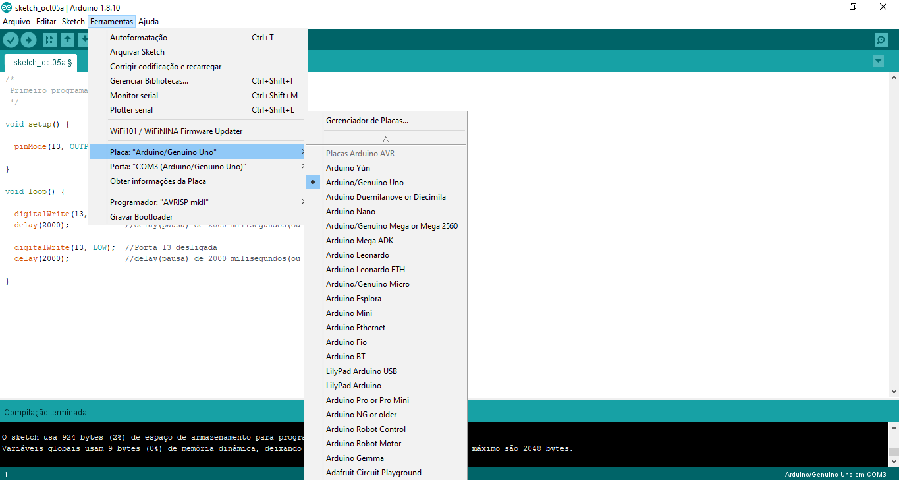
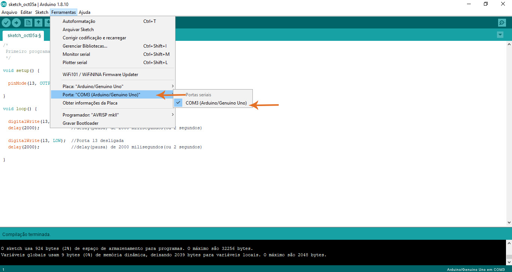
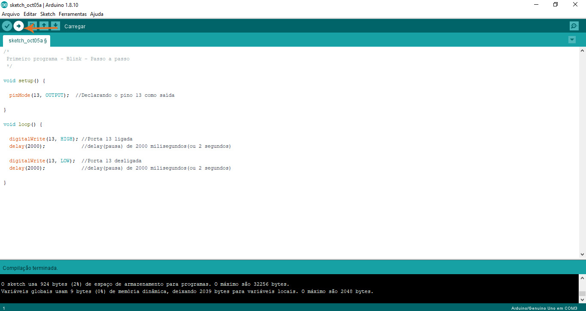
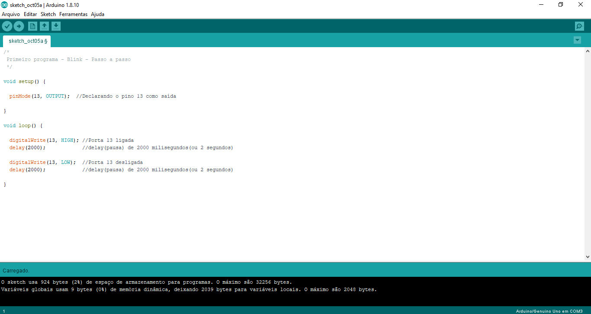

O Arduino abre várias possibilidades de projetos, desde carrinhos de
controle remoto, robôs, automatização de sistemas, sensores que detectam
calor, som, movimento e etc. As possibilidades são grandes, por isso, além
de ensinarmos a fazer seu primeiro programa, indicamos no link abaixo, alguns
projetos disponíveis que muitas pessoas desenvolvem e disponibilizam no site
oficial da Arduino.
Projetos com Arduino
Muitas pessoas ao aprenderem a programar o Arduino, desenvolvem esse programa chamado blink, que é nada mais nada menos do que ligar um led no Arduino e fazê-lo piscar. Esse programa seria o equivalente a um "Olá Mundo" em uma outra linguagem de programação, já que é tão simples quanto.
Mais adiante, ensinaremos a desenvolver este projeto, explicando passo a passo os materiais necessários para desenvolver o circuito, como ligá-los, explicaremos como funciona o código (sua lógica e cada função utilizada) e o resultado final.
Para fazer este experimento, você irá precisar de:
OBS: caso você não tenha como utilizar um Arduino físico, acesse o simulador
abaixo chamado Tinkercad, nele você poderá simular esse experimento com o
Arduino.
Tinkercad
A seguir, mostraremos o circuito que deve ser montado e o explicaremos.
O led usado tem 2 polaridades (positivo e negativo), o negativo (que é a perna menor) deve ser ligada no GND (ground ou terra), o positivo (perna maior) deve ser ligada a respectiva porta, no nosso caso é a 13 (lembrando que as portas digitais trabalham em 5V). Porém, o led não necessita de 5V, e sim uma tensão e corrente menor, para isso, colocaremos um resistor de 220ohms (220R em algumas representações) no polo positivo do led para limitar a tensão e corrente (também seria possível por o resistor no polo negativo).
Também é possível ligar mais leds nas outras portas do Arduino, como na imagem a seguir:
Tendo o circuito pronto, iremos prosseguir a programação.
Neste tópico do projeto, apresentaremos primeiro o código, depois explicaremos a sua lógica e por último as funções utilizadas.

Primeiramente, declaramos o nosso pino 13 como sendo uma saída na função
void setup().
Depois, na função void loop(), informaremos que o pino 13 estará ligado, ou seja,
passando corrente, isso ocorrerá por um tempo de 2 segundos.
Passados esses 2 segundos, informaremos que o pino 13 estará desligado, ou seja,
não passando corrente, isso ocorrerá por um tempo de 2 segundos.
Após esses 2 segundos, os comandos dentro da função loop serão repetidos novamenete,
isso se repetirá infinitamente até que haja uma interrupção.
Agora trataremos de explicar as funções utilizadas:
É uma função padrão que deve ser incluída em todo programa no Arduino. Essa função não retorna valor algum e, diferente de outras funções, ela deve ser criada no código, e não chamada.
Essa função será chamada uma única vez, ou seja, tudo o que estiver dentro dela acontecerá apenas uma vez dentro do seu programa.
Assim como o void setup, o void loop também é uma função que deve ser incluída em todos os seus sketches. Também é uma função que não possui retorno e é criada no sketch.
Diferentemente da função void setup, o void loop será chamado repentinamente, formando assim um loop. Tudo que estiver dentro dessa função ocorrerá várias vezes até que haja alguma interrupção externa ou dentro do próprio código.
Essa função diferentemente das anteriores é chamada, ou seja, já é
uma função padrão da biblioteca do Arduino. Nela, você irá declarar
o estado da sua porta, se é uma entrada ou saída, da seguinte forma:
pinMode(Número da porta, OUTPUT ou INPUT);
Na função, você deverá colocar o número da porta, OUTPUT caso deseja que a porta seja uma saída e INPUT se deseja uma entrada.
Também é uma função que deve ser chamada, ela define o estado
lógico do pino, se está em nível alto ou baixo (HIGH ou LOW), isso
significa passando ou não corrente. É usada da seguinte forma:
digitalWrite(Número da porta, Estado lógico HIGH ou LOW);
Note que é importante escrever as funções desse jeito em específico,
pois o compilador não entenderá o programa caso a função esteja escrita
diferente.
Para um nível lógico alto (passando corrente), coloca-se HIGH, e para
um nível lógico baixo (não passando corrente), coloca-se LOW.
A função delay é responsável por um atraso no seu programa, que pode
ser determinado da seguinte forma:
delay(Tempo do atraso);
Vale ressaltar que o tempo desse atraso está em milisegundos, por isso quando exigimos um atraso de 2 segundos colocamos no sketch 2000, pois a função exige o tempo em milisegundos.
OBS: é importante ressaltar que, para encerrar uma função, é necessário colocar ";" no final, exceto em void setup e void loop.
A seguir, vamos mostrar todos os passos para compilar seu código.
Para compilar seu código, primeiramente vá na barra de Ferramentas, mostrado acima.
Depois, procure a barra "Placa", e verifique se o Arduino que estiver utilizando está selecionado, caso contrário, selecione-o.
No nosso caso, está selecionado o Arduino Uno, a placa que iremos utilizar.
Depois vá na barra "Porta: COM" e selecione a entrada correta, no caso estará indicado com o nome da sua placa.
Feito tudo isso, clique em Carregar, você poderá salvar seu sketch se quiser, após ter salvo o arquivo do sketch, ele começará a compilar.
Pronto! Seu programa já foi compilado, seu Arduino começará a funcionar dado alguns segundos.
Após ter montado o circuito, feito o programa e compilado para o Arduino, o resultado final deve ficar mais ou menos assim:
Houve uma alteração no código usado para fazer o blink, mas é
apenas algumas adições no código já mostrado.
Projeto finalizado! Se você conseguiu fazer seu blink, parabéns! Você acabou
de fazer seu primeiro programa no Arduino. Esperamos que você tenha se interessado
pelo Arduino e que você busque cada vez mais aprender sobre a placa e que se
interesse por desenvolver projetos ainda mais complexos.
Como indicação de um projeto um pouco mais complexo, sugerimos que tente fazer um semáforo, é possível fazer um apenas com as funções apresentadas, a única diferença será a lógica aplicada.